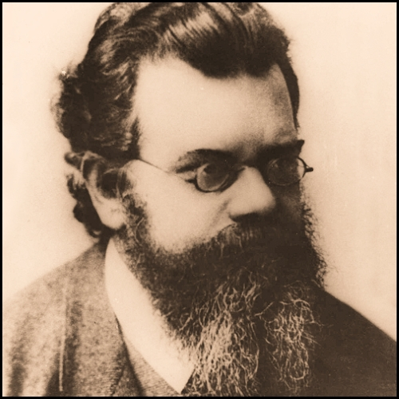

Boltzmann

Ludwig Boltzmann é o pioneiro da aplicação da estatística nos estudos da termodinâmica e da teoria cinética dos gases. Boltzmann doutorou-se em 1866 na Universidade de Viena e, no ano seguinte, tornou-se assistente do físico esloveno Josef Stefan. Foi professor de física teórica na Universidade de Graz e, depois, professor de matemática em Viena. Entre 1876 e 1889 voltou a lecionar em Graz, na cadeira de física experimental. Lecionou em Munique de 1889 a 1893 - e, a seguir, em Viena e Leipzig.
Boltzmann foi o primeiro a aplicar a teoria atômica na explanação da segunda lei da termodinâmica e a correlacionar o conceito de entropia com o cálculo das probabilidades. Estabeleceu, em seu famoso Teorema H, baseando-se nas leis da mecânica, a tendência que tem um sistema constituído de um grande número de moléculas (como os gases) de assumir uma certa uniformidade na distribuição da energia, em completa subordinação ao equilíbrio térmico do sistema.